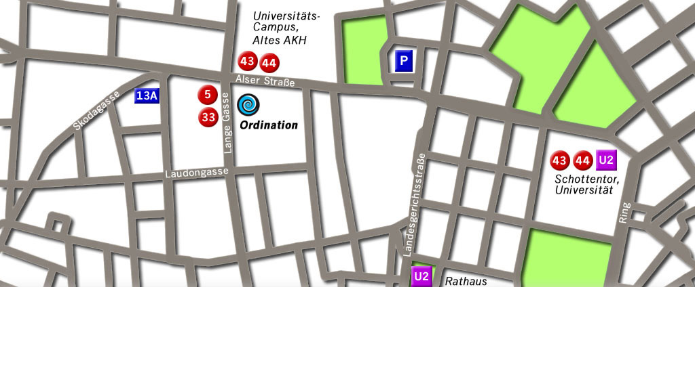

Facharzt für Zahn-, Mund- und
Kieferheilkunde
Ihr Lächeln als Gesamtkunstwerk.
Ein schönes Lächeln entsteht aus der Harmonie zwischen Lippen, Zahnfleisch und Zähnen – der
sogenannten Rot-Weißen-Ästhetik. Gewebeschonendes Bleichen verhilft zu weißeren Zähnen, mit neuesten
Keramiken und Kunststoffen korrigieren wir die Form, mit Implantaten geben wir Ihnen Verlorenes
dauerhaft zurück, und mit mikrochirurgischen Maßnahmen am Zahnfleisch verleihen wir Ihren Zähnen den
entsprechenden Rahmen.
Große Schwierigkeiten fangen meist ganz klein an. Darum wollen wir auch die kleinsten Probleme bei Ihren Zähnen und Ihrem Zahnfleisch möglichst früh erkennen und mit maximaler Präzision behandeln. Die technische Ausrüstung unserer Praxis hat uns in vielen Bereichen ungeahnte Möglichkeiten eröffnet, Behandlungen unter dem Zeiss OP-Mikroskop mit bis zu 23-facher Vergrößerung, beste 3D-Sichtverhältnisse und Bewegungsfreiheit für den Chirurgen durch unser kopfgetragenes Varioskop® und punktgenaue Diagnose durch digitales Röntgen.
1986 - Promotion zum Dr. med univ. an der Universität Wien; anschließend Spitalstätigkeit; zahnärztliche Ausbildung an der Univ. Klinik ZMK Wien
1991 - Staatsprüfung zum Facharzt für ZMK; Assistenzarzt an der Abteilung für Orale Chirurgie der Univ. Klinik ZMK Wien; Eröffnung einer zahnärztlichen Ordination
2000 - Habilitation; Thema „Präimplantologische Diagnostik“ Oberarzt an der Abteilung für Parodontologie und Prophylaxe der Univ. Klinik ZMK Wien
2001 - Promotion zum Dr. med. dent.
2003 - Vorsitzender des Wissenschaftlichen Beirates der Österr. Ges. f. Parodontologie
2004 - Oberarzt an der Abteilung für Prothetik der Univ. Klinik ZMK Wien
seit 2010 - ausschliesslich in der Privatpraxis tätig.
Univ. Doz. DDr. Peter Solar
Lange Gasse 76/16, 1080 Wien
Tel.: +43 (1) 89 02 889
Fax: +43 (1) 89 02 889 - 15
E-Mail: welcome@petersolar.at

Anfahrtsplan (pdf)
Der Schutz Ihrer Daten ist uns wichtig. Wir wollen Sie daher an dieser Stelle darüber informieren,
welche personenbezogenen Daten wir in unserer Arztpraxis und auf unserer Website zu welchem Zweck
verarbeiten.